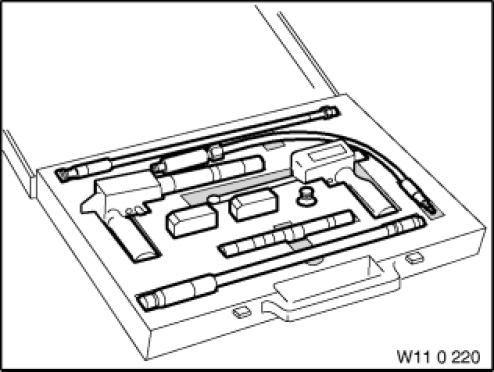

11 0 220 Compression Tester
11 0 220 Compression Tester
0490613
Minimum set: Mechanical tools
MW

NOTE: (compression pressure testing set) For all petrol and diesel engines.
SI number: 01 09 92 (558)
Consisting of:
4 = 0490620 Sensor
NOTE: (Test probe) For recording compression testers 11 0 224 and 11 0 160 / engine: S14, S38, S50 - Replaced by 11 0 235 (0 493 129)
4 = 0490616 Card
NOTE: (Cards) 100 pieces For recording compression tester 11 0 221
2 = 0494517 Adapter
NOTE: Measuring "absolute compression" at all cylinders. Engine: W17
4 = 0490622 Card
NOTE: (Cards) 100 pieces For recording compression tester 11 0 224
2 = 0493634 Case
NOTE: With foam insert for recording compression tester
4 = 0490614 Compression tester
NOTE: (Compression tester) For diesel engines.
4 = 0490615 Sensor
NOTE: (Test probe) For recording compression testers 11 0 221 and 11 0 160 / engine: M21, M41, M47, M51, M57, M57T2
4 = 0490617 Compression tester
NOTE: (Compression tester) For petrol engines.
4 = 0490618 Hose
NOTE: (Extension hose) For rubber tapered section with fitting 11 0 228
4 = 0490619 Sensor
NOTE: (Test probe) For recording compression testers 11 0 224 and 11 0 160 / engine: M10, M20, M30, M40, M42, M43, M44, M50, M52, M60, M62, M70, M73, N62, S50US, S52US, S62
4 = 0490621 Tapered section
NOTE: (Rubber tapered section) For recording compression testers 11 0 224 and 11 0 160.
4 = 0490625 Valve
NOTE: (Non-return valve)
4 = 0490626 Filter
NOTE: (Filter) 3 x 3 mm
9 = 0493129 Sensor
NOTE: (Test probe, screw-in) For measuring "absolute compression" at all cylinders, engine: S14, S38, S50B30, S50B32, S50US, S52US, S54, S85
2 = 0493387 Sensor
NOTE: (Test probe) For recording compression tester 11 0 221 or DIS pressure sensor / engine: M47, M57, M57TU,M57T2
16 = 0495279 Adapter
NOTE: M67, M67TU engine